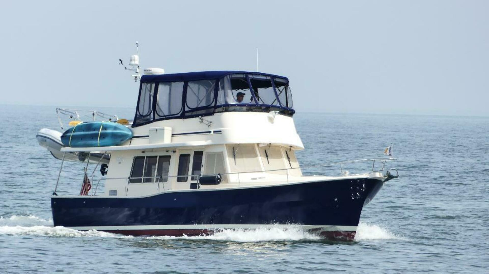

B-Scout Boat Guide · MNSH-400-TR
Mainship 400 400 Trawler / 41 Expedition / 414 Trawler
2003–2012
The Mainship 400 Trawler is a broad-beam flybridge cruiser with two cabins, molded bridge stairs and primarily single-diesel shaft propulsion. Its semi-displacement hull, large bridge and substantial tankage support extended inland and coastal cruising. Later examples were also marketed as the 414 Trawler.

- Length
- 41.33 ft
- Beam
- 14.17 ft
- Draft
- 3.67 ft
- Hull behaviour
- Semi-Displacement
- Fuel
- Diesel
- Propulsion
- Shaft
- Engine configuration
- Primarily single inboard diesel; engine options vary
- Boat family
- Trawler
- Construction
- Fiberglass hull with cored deck and superstructure areas
Best for
- Couples planning extended inland and coastal cruising
- Owners wanting a large flybridge without ladder access
- Buyers comfortable with 40-foot marina and maintenance costs
Trade-offs
- High air draft and wide beam limit route and marina choices
- Single-engine examples rely on one propulsion system
- Large superstructure and deck areas require moisture surveillance
- Operating and haul-out costs are materially higher than smaller Mainships
Known concerns
- No model-specific concern has been promoted to B-Scout’s evidence threshold. This does not mean the model has no age-, condition- or hull-specific risks.
Inspection focus
- Verify engine specification, thrusters and actual loaded performance
- Inspect deck, flybridge, window and superstructure cores for moisture
- Inspect fuel tanks, exhaust, electrical distribution and generator installation
- Confirm air draft, mast-lowering procedure and haul-out requirements
Continue researching
Related boat models
Mainship 350 Trawler
39.75 ft · Semi-Displacement
Mainship 390 Trawler
39.75 ft · Semi-Displacement
Mainship 34 MKI
34 ft · Semi-Displacement
Mainship 34 MKII
34 ft · Semi-Displacement
Mainship 34 MKIII
34 ft · Semi-Displacement
Mainship 34T
34 ft · Semi-Displacement
About this record
B-Scout preserves uncertainty: missing information remains unknown rather than being treated as a negative. Specifications and guidance describe the model record; individual boats can differ by year, equipment, refit and condition.